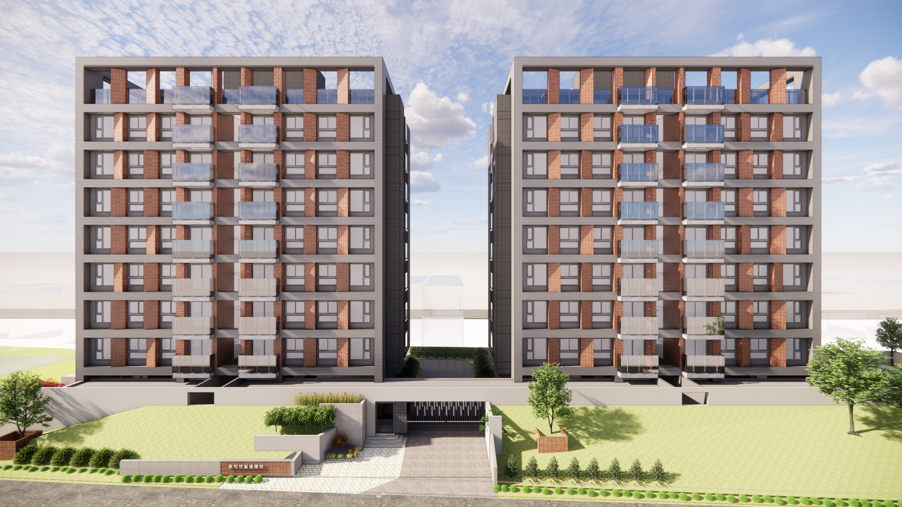

若里，取自 Rolling 我們相信，設計不是一次完成的結果；而是一個持續推進、不斷超越的過程
Selected Projects
2026-Present
桃園南崁AI數據中心建置工程
2025-Present
彰化埔心集合住宅新建工程

2025-Present
 南科嘉義園區生技廠房新建工程
南科嘉義園區生技廠房新建工程
2025-Present
宜蘭清水自然養生及觀光遊憩園區營運與空間規劃
2025
南投埔里創新長照園區設計規劃及開發策略評估
2025
台北海洋科技大學士林校區發展規劃
2025
澎湖望安鄉立圖書館重建可行性研究
2024
內湖碧湖四小段危老重建規劃設計
2024
新北社會局智慧社福大樓前期規劃
2020-Present
彰化農舍新建工程
About Us
若里 Rolling 是一家落實於專業實務與前瞻思考的空間規劃設計事務所。
跨越建築、室內、景觀與土地開發的既定疆界，為每一個案子尋求量身訂做的最佳空間策略。我們專注於當代空間的內在秩序。從高科技智能自動化生技廠房到公共文化建築，我們以極簡的空間語彙、純粹的構造與自然光影，回應當代都市與產業的環境秩序，將複雜的機能轉譯為俐落而純粹的空間構築。
「若」代表了建築的意境與可能性，而「里」則是土地、尺度與鄰里關係。
我們關注空間如何被使用、被改變、被時間驗證，並在持續的對話中，完成貼近使用者、生活與環境的設計。
Team
- 許庭愷主持建築師 / Principal
- 吳奕輝專案建築師 / Project Architect
Location
114066 台北市內湖區基湖路1號6樓之1
407609 台中市西屯區朝富路213號3樓之8
T / 04-22546115 #6602
E / studio@roa.tw